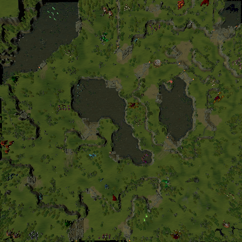

HEADER MENU
Показать только выбранного уровня
Показать выбранного и всех до него
1
3

Выделить на карте:
Показать все
Монстры уровня 1 - 6
Монстры уровня 7 - 15
Монстры уровня 16 - 25
БОССЫ
Алтари лечения
Руны
Сильные монстры уровня 1 - 6
Сильные монстры уровня 7 - 15
Сильные монстры уровня 16 - 25
FOOTER